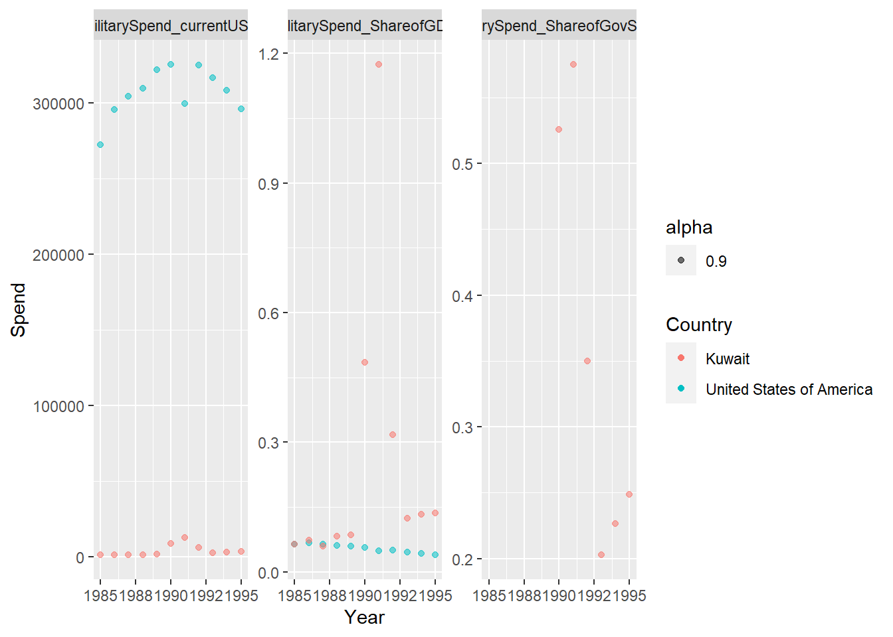
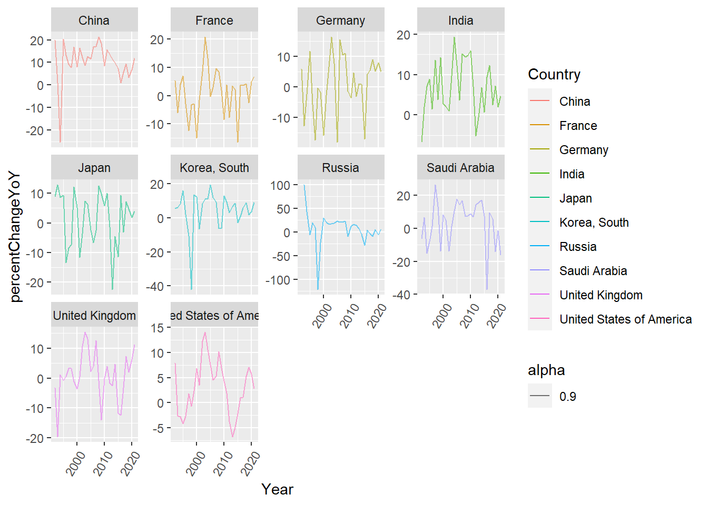
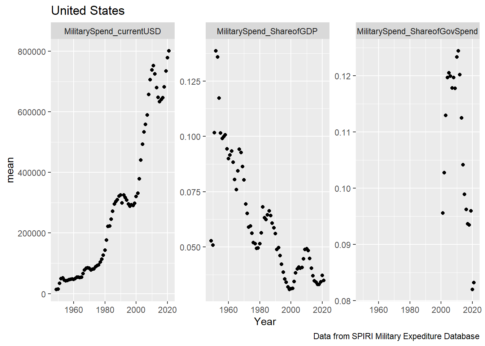
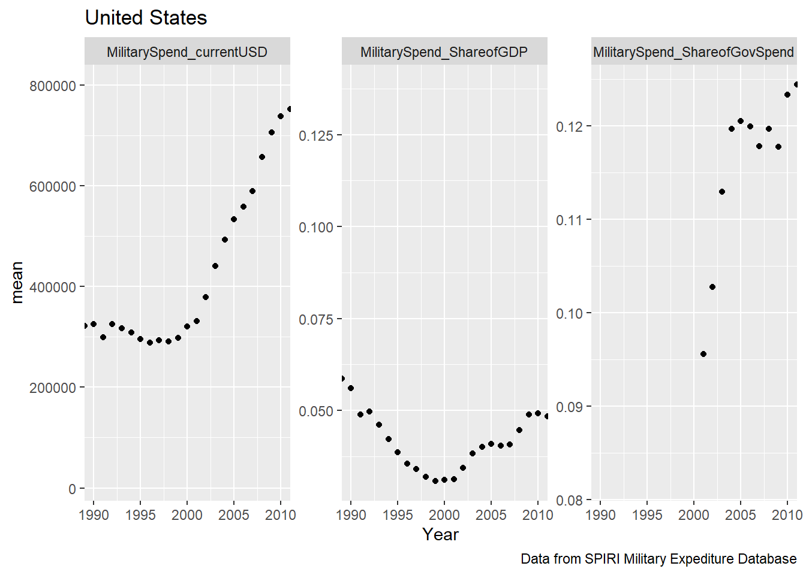

Global Government spending(current USD), Size correlates with Share of GDP
Data choice overview
I initially chose this data set because recent events abroad have certainly escalated a global fear of war and I wanted to see how the tides of military spending ebbed and flowed over the course of recent history. The more I cleaned the data and played around with visualizations, the more questions I had. I am excited to see what sort of trends come from analyzing this data set.
I plan to show how different countries and regions value military spending and how that value changes over the course of time. Ideally I will be able to explain patterns in what I see with global or locally important historic events. How did the US spending change after 9/11 or more recently did we see anyone bolstering their defenses before news broke of the Russian invasion of Ukraine? How did spending change globally after the first and then second world war? While I am not a statistical expert and will not be able to refute a causation vs correlation argument, visualizations of these events and the corresponding spending patterns will still be interesting and hopefully provoking of conversation.
Data
Description
Below is a list of the available sheets in the SIPRI military spending data export. A few of the tabs are the same base information altered to reflect a specific currency or ratio. I am choosing to use the “Current USD” as my source of raw spending numbers as I believe it to be the easiest to understand and relate to. I will also be using “share of GDP” as well as “Share of Govt. spending” to provide context around a nations spending compared to their population they intend on defending as well as compared to overall spending.
“Gross domestic product (GDP) is the total monetary or market value of all the finished goods and services produced within a country’s borders in a specific time period.” - Investopedia
The Military spending information I am analyzing comes from SIPRI, the Stockholm International Peace Research Institute. SIPRI was established in 1966 for the purpose of “research into conflict, armaments, arms control and disarmament”. The organization is funded by the Swedish government however it regularly works internationally with research centers around the globe. SIPRI collected this particular data set from the official reports of each of the included governments in the form of official publications such as public budgets.
Here is a peek at what the raw information looks like.
Before pivoting my data I wanted to add a column for region. I chose to do this with an algorithm as an exercise in iteration however it would have been more practical to just hard code this column.
The list of countries where there are NA’s for every year:
Code
Regions <- rawData_CurrentUSD %>%filter(is.na(`1949`))%>%select(Country)Regions
# A tibble: 18 × 1
Country
<chr>
1 Africa
2 North Africa
3 sub-Saharan Africa
4 Americas
5 Central America and the Caribbean
6 North America
7 South America
8 Asia & Oceania
9 Oceania
10 South Asia
11 East Asia
12 South East Asia
13 Central Asia
14 Europe
15 Central Europe
16 Eastern Europe
17 Western Europe
18 Middle East
You will notice that some of these are continents and sub-continents, I wanted to break these into a Region field. The pattern I saw and chose to exploit was the fact that the overarching category would always be followed with a more specific category such as the Africa followed by North Africa values (see earlier print outs to see raw information).
I then added an empty vector into the tibble and populated it according to the Country column using the pattern described above.
Once I had left flags in the region column dictating where each region was starting I could use fill(Region) in order to populate the rest of the column.
Code
emptyRegionCol <-as.numeric(vector(mode ="character",length =length(rawData_CurrentUSD$`1949`)))## doing as numeric here as a hacky way to fill this with NA's, any better way?#adding col to tibble to be populated latermutated_CurrentUSD <- rawData_CurrentUSD %>%mutate(Region =emptyRegionCol,.before=2)# replacing the empty char in region with actual region if 2 NAs appear in a row#iterates along the indices of the Country vectorfor(i inseq_along(mutated_CurrentUSD$Country) ){#if 2 nas in a row then do somethingif(is.na(mutated_CurrentUSD$`1949`[i]) &&is.na(mutated_CurrentUSD$`1949`[i+1]) ){ mutated_CurrentUSD$Region[i+1] <- mutated_CurrentUSD$Country[i+1] #this works because when referencing an index outside of the vector R will return NA - Great to know. }#if the row is a regionif(is.na(mutated_CurrentUSD$`1949`[i]) ){ mutated_CurrentUSD$Region[i+1] <- mutated_CurrentUSD$Country[i] }}mutated_CurrentUSD <- mutated_CurrentUSD %>%fill(Region)head(mutated_CurrentUSD)
Now that I had my proof of concept for cleaning one of the sheets, in a format I wanted, it was time to clean the other sheets as well. I could have taken the above code and modified it to work for each of the other tabs individually however I took the opportunity to practice with functions and created the below function to clean any of the tabs once they were loaded in and lightly pre-processed.
Clean and format function
Code
## creating a function to clean the other sheets##Input: a partially cleaned tibble, must have been read in and had excess rows trimmed##output: tibble with regions correctly labeled and umbrella region categories i.e Africa above south Africa removed##Note: All sub categories contained the main category name in them, will use regex to create groupings in the future.CleanData <-function(inSheet){ emptyRegionCol <-as.numeric(vector(mode ="character",length =nrow(select(inSheet,2))))#adding col to tibble to be populated later output <- inSheet %>%mutate(Region = emptyRegionCol,.before=2)# replacing the empty char in region with actual region if 2 NAs appear in a row#iterates along the indices of the Country vectorfor(i inseq_along(output$Country)){if(is.na(output[[i,3]]) &&is.na(output[[(i+1),3]])) output$Region[i+1] <- output$Country[i+1]if(is.na(output[[i,3]])) output$Region[i+1] <- output$Country[i] } output <- output %>%fill(Region)# removing header rows output <- output %>%filter(!is.na(output[[3]]))}
Below I call the function on each of the tibbles loaded in earlier. For the sake of space I will only show one tab being cleaned.
Next I pivot the years, it should be noted that both the pivoting and Converting of notation could be handled by the clean function above, i kept the steps separate so that I could show the progression of the dataframe.
I must also handle the xxx and … notations. From the information page of my data set I can see that the notation is described as follows:
Raw Notation
Meaning
…
Data unavailable
xxx
Country did not exist or was not independent during all or part of the year in question
For now I think I will just keep both as NA but will save this form of the information for future use.
# A tibble: 6 × 4
Country Region Year value
<chr> <chr> <chr> <chr>
1 Algeria North Africa 1949 <NA>
2 Algeria North Africa 1950 <NA>
3 Algeria North Africa 1951 <NA>
4 Algeria North Africa 1952 <NA>
5 Algeria North Africa 1953 <NA>
6 Algeria North Africa 1954 <NA>
Code
# testing knitr... needs to be a bit better# knitr::kable(# list(df1,df2,df3),# caption = "test",# booktabs = TRUE,valign='t'# )
Converting Column Types
Finally I will convert the column types to their correct representation.
Before:
# A tibble: 6 × 4
Country Region Year value
<chr> <chr> <chr> <chr>
1 Algeria North Africa 1949 <NA>
2 Algeria North Africa 1950 <NA>
3 Algeria North Africa 1951 <NA>
4 Algeria North Africa 1952 <NA>
5 Algeria North Africa 1953 <NA>
6 Algeria North Africa 1954 <NA>
Code
#Year to NumberCleaned_currentUSD$Year<-as.integer(Cleaned_currentUSD$Year)Cleaned_ShareOfGovSpend$Year<-as.integer(Cleaned_ShareOfGovSpend$Year)Cleaned_ShareOfGDP$Year<-as.integer(Cleaned_ShareOfGDP$Year)# value to doubleCleaned_currentUSD$value <-as.numeric(Cleaned_currentUSD$value)Cleaned_ShareOfGovSpend$value<-as.numeric(Cleaned_ShareOfGovSpend$value)Cleaned_ShareOfGDP$value<-as.numeric(Cleaned_ShareOfGDP$value)
After:
# A tibble: 6 × 4
Country Region Year value
<chr> <chr> <int> <dbl>
1 Algeria North Africa 1949 NA
2 Algeria North Africa 1950 NA
3 Algeria North Africa 1951 NA
4 Algeria North Africa 1952 NA
5 Algeria North Africa 1953 NA
6 Algeria North Africa 1954 NA
# A tibble: 6 × 4
Country Region Year MilitarySpend_ShareofGDP
<chr> <chr> <int> <dbl>
1 Algeria North Africa 1949 NA
2 Algeria North Africa 1950 NA
3 Algeria North Africa 1951 NA
4 Algeria North Africa 1952 NA
5 Algeria North Africa 1953 NA
6 Algeria North Africa 1954 NA
Joining of the Different Tabs
I think we will want to do a full join as we dont want to lose any information.
# A tibble: 6 × 6
Country Region Year MilitarySpend_currentUSD MilitarySpend_Sh…¹ Milit…²
<chr> <chr> <int> <dbl> <dbl> <dbl>
1 Algeria North Africa 1949 NA NA NA
2 Algeria North Africa 1950 NA NA NA
3 Algeria North Africa 1951 NA NA NA
4 Algeria North Africa 1952 NA NA NA
5 Algeria North Africa 1953 NA NA NA
6 Algeria North Africa 1954 NA NA NA
# … with abbreviated variable names ¹MilitarySpend_ShareofGovSpend,
# ²MilitarySpend_ShareofGDP
Code
#nrow(MilitarySpend)
Descriptive stats
Pivoting
Mean, Median and Standard Deviation for each of the tabs.
First I wanted to get an idea of what my data looks like for each of the countries individually. In order to see this I grouped on country name and the types of data we have.
In order to get that done I need to pivot my data again.
# A tibble: 6 × 5
Country Region Year viewOfSpend Spend
<chr> <chr> <int> <chr> <dbl>
1 Algeria North Africa 1949 MilitarySpend_currentUSD NA
2 Algeria North Africa 1949 MilitarySpend_ShareofGovSpend NA
3 Algeria North Africa 1949 MilitarySpend_ShareofGDP NA
4 Algeria North Africa 1950 MilitarySpend_currentUSD NA
5 Algeria North Africa 1950 MilitarySpend_ShareofGovSpend NA
6 Algeria North Africa 1950 MilitarySpend_ShareofGDP NA
# A tibble: 14 × 2
Region numberCountries
<chr> <int>
1 sub-Saharan Africa 47
2 Central Europe 20
3 Western Europe 20
4 Middle East 16
5 Central America and the Caribbean 13
6 South America 11
7 South East Asia 11
8 Eastern Europe 8
9 East Asia 6
10 South Asia 6
11 Central Asia 5
12 North Africa 4
13 Oceania 4
14 North America 2
Statistics by region
Now that I have all of my data in a malleable state I will do some initial statistics on each tab of the initial dataset to give asome insight to what patterns or outliers may exist.
MilitarySpend_currentUSD
I will be using the current USD data for my analysis of major world events so I will not dive deeper at this point.
# A tibble: 14 × 6
# Groups: Region [14]
Region viewOfSpend mean std min max
<chr> <chr> <dbl> <dbl> <dbl> <dbl>
1 North America MilitarySpend_… 1.49e5 2.23e5 426. 8.01e5
2 East Asia MilitarySpend_… 2.04e4 4.21e4 0 2.93e5
3 Eastern Europe MilitarySpend_… 1.09e4 3.52e4 0 2.46e5
4 Western Europe MilitarySpend_… 7.14e3 1.28e4 0 7.34e4
5 Middle East MilitarySpend_… 4.91e3 9.59e3 0 8.72e4
6 South Asia MilitarySpend_… 4.46e3 1.17e4 2.48 7.66e4
7 Oceania MilitarySpend_… 2.83e3 6.29e3 0 3.18e4
8 South America MilitarySpend_… 2.02e3 4.57e3 0 3.69e4
9 South East Asia MilitarySpend_… 1.94e3 3.16e3 0 3.30e4
10 North Africa MilitarySpend_… 1.36e3 2.21e3 3.71 1.04e4
11 Central Europe MilitarySpend_… 1.14e3 2.20e3 0 1.74e4
12 Central Asia MilitarySpend_… 3.36e2 5.92e2 0 2.55e3
13 Central America and the Caribbean MilitarySpend_… 2.86e2 9.54e2 0 8.68e3
14 sub-Saharan Africa MilitarySpend_… 2.58e2 6.35e2 0 6.85e3
# A tibble: 14 × 6
# Groups: Region [14]
Region viewOfSpend mean std min max
<chr> <chr> <dbl> <dbl> <dbl> <dbl>
1 Middle East MilitarySpen… 0.0774 0.0672 1.12e-2 1.17
2 North America MilitarySpen… 0.0422 0.0285 9.90e-3 0.139
3 North Africa MilitarySpen… 0.0297 0.0158 9.47e-3 0.155
4 South East Asia MilitarySpen… 0.0273 0.0159 1.90e-3 0.0868
5 East Asia MilitarySpen… 0.0261 0.0190 6.30e-3 0.0833
6 South Asia MilitarySpen… 0.0258 0.0169 2.45e-3 0.0699
7 Eastern Europe MilitarySpen… 0.0253 0.0151 2.63e-3 0.0916
8 South America MilitarySpen… 0.0237 0.0127 1.51e-3 0.0888
9 Western Europe MilitarySpen… 0.0232 0.0146 2.65e-3 0.110
10 sub-Saharan Africa MilitarySpen… 0.0223 0.0261 1.72e-7 0.344
11 Central Europe MilitarySpen… 0.0200 0.0132 1.63e-4 0.111
12 Oceania MilitarySpen… 0.0175 0.00862 1.88e-3 0.0518
13 Central Asia MilitarySpen… 0.0130 0.00599 3.66e-6 0.0396
14 Central America and the Caribbean MilitarySpen… 0.0118 0.00923 6.15e-4 0.0659
After sorting by mean share of GDP spend I see that the middle east has the highest by quite a large margin. This is odd because usally the US(North America), has the highest military spending. A max of 1.17 for GDP is also stageringly high when compared to the other regions. This prompts further investigation. A violin plot below gives a visualization of this distribution.
Code
byRegionStats_GDP
# A tibble: 14 × 6
# Groups: Region [14]
Region viewOfSpend mean std min max
<chr> <chr> <dbl> <dbl> <dbl> <dbl>
1 Middle East MilitarySpen… 0.0774 0.0672 1.12e-2 1.17
2 North America MilitarySpen… 0.0422 0.0285 9.90e-3 0.139
3 North Africa MilitarySpen… 0.0297 0.0158 9.47e-3 0.155
4 South East Asia MilitarySpen… 0.0273 0.0159 1.90e-3 0.0868
5 East Asia MilitarySpen… 0.0261 0.0190 6.30e-3 0.0833
6 South Asia MilitarySpen… 0.0258 0.0169 2.45e-3 0.0699
7 Eastern Europe MilitarySpen… 0.0253 0.0151 2.63e-3 0.0916
8 South America MilitarySpen… 0.0237 0.0127 1.51e-3 0.0888
9 Western Europe MilitarySpen… 0.0232 0.0146 2.65e-3 0.110
10 sub-Saharan Africa MilitarySpen… 0.0223 0.0261 1.72e-7 0.344
11 Central Europe MilitarySpen… 0.0200 0.0132 1.63e-4 0.111
12 Oceania MilitarySpen… 0.0175 0.00862 1.88e-3 0.0518
13 Central Asia MilitarySpen… 0.0130 0.00599 3.66e-6 0.0396
14 Central America and the Caribbean MilitarySpen… 0.0118 0.00923 6.15e-4 0.0659
# removing NAs here because I cant plot them, I dont want to replace them with other values because it is still of interest when countries do not display thier data.
Upon investigation of the underlying data I see that Kuwait in 1991 is the culprit of the high military spending as percent of GDP number.
# A tibble: 6 × 5
# Groups: Region, viewOfSpend, Year [6]
Country Region Year viewOfSpend Spend
<chr> <fct> <int> <chr> <dbl>
1 Kuwait Middle East 1991 MilitarySpend_ShareofGDP 1.17
2 Kuwait Middle East 1990 MilitarySpend_ShareofGDP 0.485
3 Kuwait Middle East 1992 MilitarySpend_ShareofGDP 0.318
4 Israel Middle East 1975 MilitarySpend_ShareofGDP 0.305
5 Israel Middle East 1976 MilitarySpend_ShareofGDP 0.292
6 Israel Middle East 1973 MilitarySpend_ShareofGDP 0.279
I initially thought this was a typo since there were two 1s in a row and it was such an insanely high spend. A share of GDP of 1.173 means Kuwait spent 117.3% of their GDP in that year. Upon further investigation, this is actually true and it was driven by the Persian Gulf War(aka Gulf War). The Gulf War was a conflict triggered by Iraqs invasion of Kuwait in 1990. This invasion was the first major international crisis since the Cold War and will certainly be a topic I add to the final analysis.
https://www.britannica.com/event/Persian-Gulf-War
Loosely I will plot Iraq, US and Kuwait spend from 1985-1995 to explore this time period.
Code
combinedData%>%filter(Year >=1985& Year<=1995)%>%filter(Country %in%c("United States of America","Iraq","Kuwait"))%>%ggplot(mapping=aes(y = Spend, x = Year))+geom_point(aes(color = Country, alpha=0.9),na.rm =FALSE)+facet_wrap(vars(`viewOfSpend`),scales ="free_y")

A new discovery! Iraq chose not to report their spending during the Gulf war. This is most likely due to the fact that SIPRI data collection is funded by the Swedish government who have pretty close ties to the United States. Sweden was one of the first countries to recognize US independence in 1783. Below I highlight reported Iraqi military spending overlaid with markings for the start and end of their reported data.
# A tibble: 14 × 6
# Groups: Region [14]
Region viewOfSpend mean std min max
<chr> <chr> <dbl> <dbl> <dbl> <dbl>
1 Middle East MilitarySpend… 0.161 0.0757 1.83e-2 0.575
2 South Asia MilitarySpend… 0.122 0.0511 3.65e-2 0.274
3 Eastern Europe MilitarySpend… 0.115 0.0887 7.71e-3 0.350
4 sub-Saharan Africa MilitarySpend… 0.103 0.260 3.90e-3 5.82
5 South East Asia MilitarySpend… 0.0984 0.0749 7.83e-3 0.392
6 North Africa MilitarySpend… 0.0973 0.0369 2.81e-2 0.178
7 East Asia MilitarySpend… 0.0837 0.0503 1.73e-2 0.225
8 South America MilitarySpend… 0.0728 0.0392 1.73e-2 0.348
9 North America MilitarySpend… 0.0600 0.0386 2.51e-2 0.124
10 Central Asia MilitarySpend… 0.0518 0.0269 1.36e-2 0.158
11 Oceania MilitarySpend… 0.0441 0.0155 1.54e-2 0.0879
12 Central Europe MilitarySpend… 0.0439 0.0283 6.72e-4 0.290
13 Central America and the Caribbean MilitarySpend… 0.0354 0.0218 2.20e-3 0.214
14 Western Europe MilitarySpend… 0.0348 0.0189 8.58e-3 0.164
The share of Gov spend shows an insanely high max of sub-Saharan African spending as well as the Middle East.The Middle east spending has been explained above however below I will investigate the sub-sahara African spending.
Zooming into Zimbabwe’s Violin plot we can see that they often have an exteremly high military spending when compared to overall spending. As suggested by [5], Zimbabwe’s military spending is highly influenced by internal political turbulence more so than economic factors. It should also be mentioned that their military spending is often determined by SIPRI from estimation and not necessarily accurate, for this reason I wont be looking further into the anomaly.
Now that some introductory statistics have been done to explain the data at first glance, we focus in on the heavy hitters in the military spending space and look into how recent global events have affected their spending habits.
Error in head(.): object 'byRegionStats' not found
Code
top6_mean
Error in eval(expr, envir, enclos): object 'top6_mean' not found
Code
library(forcats)statsViz2<- byRegionStats%>%mutate(test =fct_reorder(Region,desc(mean)))%>%ggplot(mapping=aes(y = test, x = mean))+geom_point(aes(color = Region, alpha=0.9, size=max)) +guides(alpha="none",color="none") +labs(title ="Certain Regions on average spend more than others" ,caption ="Data from SPIRI Military Expediture Database")
Error in mutate(., test = fct_reorder(Region, desc(mean))): object 'byRegionStats' not found
Code
statsViz2
Error in eval(expr, envir, enclos): object 'statsViz2' not found
From this we can see the top 6 spenders reside in a cluster of there own when you look at their mean and max spend.
Faceted by Region, show mean spend of each country
# A tibble: 924 × 4
# Groups: Region, viewOfSpend [14]
Region viewOfSpend Year mean
<chr> <chr> <int> <dbl>
1 North America MilitarySpend_currentUSD 2021 413561.
2 North America MilitarySpend_currentUSD 2020 400839.
3 North America MilitarySpend_currentUSD 2011 386841.
4 North America MilitarySpend_currentUSD 2010 378660.
5 North America MilitarySpend_currentUSD 2019 378369.
6 North America MilitarySpend_currentUSD 2012 372829.
7 North America MilitarySpend_currentUSD 2009 362427.
8 North America MilitarySpend_currentUSD 2018 352610.
9 North America MilitarySpend_currentUSD 2013 348872.
10 North America MilitarySpend_currentUSD 2008 338049.
# … with 914 more rows
Code
byRegionplot<- byRegionStats_year%>%ggplot(mapping=aes(x = Year, y = mean))+geom_point(aes(color = Region, alpha=0.9,)) +theme_light() +guides(alpha="none") +labs(title ="East asia and NA dominate raw spend" ,caption ="Data from SPIRI Military Expediture Database")byRegionplot
To be a little less noisy, showing the top 6 spenders over time
Error in `filter()`:
! Problem while computing `..1 = Region == top6_mean`.
ℹ The error occurred in group 1: Region = "Central America and the Caribbean",
viewOfSpend = "MilitarySpend_currentUSD".
Caused by error in `mask$eval_all_filter()`:
! object 'top6_mean' not found
Code
byRegionplot_top6<- byRegionStats_year_top6%>%ggplot(mapping=aes(x = Year, y = mean))+geom_point(aes(color = Region, alpha=0.9,)) +facet_wrap(vars(`Region`),scales ="free_y") +labs(title ="Raw Mean Spend in USD for top 6 Spenders" ,caption ="Data from SPIRI Military Expediture Database")
Error in ggplot(., mapping = aes(x = Year, y = mean)): object 'byRegionStats_year_top6' not found
Code
byRegionplot_top6
Error in eval(expr, envir, enclos): object 'byRegionplot_top6' not found
Seeing one member at a time
Code
##V .... not needed....VbyRegion_byYear_Stats<-combinedData%>%group_by(Region,viewOfSpend, Year)%>%summarize(mean =mean(Spend, na.rm=TRUE,sigfig=1),std =sd(Spend, na.rm=TRUE))%>%filter(mean>=1880)%>%arrange(desc(mean))byRegion_byYear_Stats
# A tibble: 389 × 5
# Groups: Region, viewOfSpend [11]
Region viewOfSpend Year mean std
<chr> <chr> <int> <dbl> <dbl>
1 North America MilitarySpend_currentUSD 2021 413561. 547458.
2 North America MilitarySpend_currentUSD 2020 400839. 533948.
3 North America MilitarySpend_currentUSD 2011 386841. 516820.
4 North America MilitarySpend_currentUSD 2010 378660. 508190.
5 North America MilitarySpend_currentUSD 2019 378369. 503424.
6 North America MilitarySpend_currentUSD 2012 372829. 498336.
7 North America MilitarySpend_currentUSD 2009 362427. 485769.
8 North America MilitarySpend_currentUSD 2018 352610. 466522.
9 North America MilitarySpend_currentUSD 2013 348872. 467195.
10 North America MilitarySpend_currentUSD 2008 338049. 450720.
# … with 379 more rows
Code
easternEurope<- byRegionStats_year%>%ggplot(mapping=aes(x = Year, y = mean))+geom_point(aes(color = Region, alpha=0.9,)) +theme_light() +guides(alpha="none") +labs(title ="East asia and NA dominate raw spend" ,caption ="Data from SPIRI Military Expediture Database")easternEurope
# A tibble: 6 × 5
# Groups: Country, Region [6]
Country Region viewOfSpend mean std
<chr> <chr> <chr> <dbl> <dbl>
1 United States of America North America MilitarySpend_currentUSD 2.88e5 2.46e5
2 USSR Eastern Europe MilitarySpend_currentUSD 2.27e5 1.28e4
3 China East Asia MilitarySpend_currentUSD 9.03e4 8.95e4
4 Russia Eastern Europe MilitarySpend_currentUSD 4.03e4 2.82e4
5 United Kingdom Western Europe MilitarySpend_currentUSD 3.11e4 2.31e4
6 France Western Europe MilitarySpend_currentUSD 2.47e4 1.90e4
bot 5 spenders on average:
Code
head(botMean)
# A tibble: 6 × 5
# Groups: Country, Region [6]
Country Region viewOfSpend mean std
<chr> <chr> <chr> <dbl> <dbl>
1 Chile South America MilitarySpend_curr… 1881. 1856.
2 Denmark Western Europe MilitarySpend_curr… 1975. 1627.
3 Mexico Central America and the Caribbean MilitarySpend_curr… 1977. 2257.
4 Czechia Central Europe MilitarySpend_curr… 2010. 794.
5 South Africa sub-Saharan Africa MilitarySpend_curr… 2128. 1509.
6 Argentina South America MilitarySpend_curr… 2136. 1758.
Top spenders by Country
In the following analysis I will be looking at significant events which impacted some if not all of the world. For the sake of clarity I will only be focusing on a select group of individual countries which are not directly involved. The top 10 countries which stand out as significant spenders in the last 10 years will be the ones focused on.
Code
# getting top 10 mean spenders in last 10 yearstopMeanCountries<-combinedData%>%group_by(Country,viewOfSpend)%>%filter(Year>=2012)%>%filter(viewOfSpend=="MilitarySpend_currentUSD")%>%summarize(mean =mean(Spend, na.rm=TRUE,sigfig=1))%>%arrange(desc(mean))%>%head(10)topMeanCountriesVec<-topMeanCountries$CountrytopMeanCountriesVec
# Raw data for these 10 countriestop10SpendCountriesbyYear<-combinedData%>%group_by(Country,viewOfSpend,Year)%>%filter(viewOfSpend=="MilitarySpend_currentUSD")%>%filter(Country %in% topMeanCountriesVec)
Code
grouped<-top10SpendCountriesbyYear%>%ungroup()%>%group_by(Country)#group_keys(grouped)top10CountryTibbles<-grouped%>%group_split(Country)#top10CountryTibbles# Using PURR here! Pretty powerful.# result is list of tibbles which have been processed to contain YoY spend increasestop10CountryTibblesYoY<-map(top10CountryTibbles,~ .x %>%mutate(percentChangeYoY = ((Spend -lag(Spend))/Spend)*100))# I then stack these DF on top of eachother to create one single DF to interact with.top10CountryYoY<-bind_rows(top10CountryTibblesYoY)#top10SpendCountriesbyYearYoY
Plots detailing
Code
PercentChangeTop10Countries<-top10CountryYoY%>%filter(Year>=1992)%>%ggplot(mapping=aes(x = Year, y = percentChangeYoY))+geom_line(aes(color = Country, alpha=0.9,))+facet_wrap(vars(Country),scale="free_y")+theme(axis.text.x=element_text(angle=60,hjust=1))PercentChangeTop10Countries

Code
top10Countries<- top10SpendCountriesbyYear%>%ggplot(mapping=aes(x = Year, y = mean))+geom_point(aes(color = Country, alpha=0.9,)) +theme_light() +guides(alpha="none") +labs(title ="East asia and NA dominate raw spend" ,caption ="Data from SPIRI Military Expediture Database")top10Countries
Error in `geom_point()`:
! Problem while computing aesthetics.
ℹ Error occurred in the 1st layer.
Caused by error in `compute_aesthetics()`:
! Aesthetics are not valid data columns.
✖ The following aesthetics are invalid:
✖ `y = mean`
ℹ Did you mistype the name of a data column or forget to add `after_stat()`?
Error in `geom_point()`:
! Problem while computing aesthetics.
ℹ Error occurred in the 1st layer.
Caused by error in `compute_aesthetics()`:
! Aesthetics are not valid data columns.
✖ The following aesthetics are invalid:
✖ `y = mean`
ℹ Did you mistype the name of a data column or forget to add `after_stat()`?
9/11 analysis
Look at US spending before and after
Code
US911<-combinedData%>%group_by(viewOfSpend,Year)%>%filter(Country =='United States of America')%>%summarize(mean =mean(Spend, na.rm=TRUE))%>%arrange(desc(mean)) us911Plot<- US911%>%ggplot(mapping=aes(x = Year, y = mean))+geom_point(aes()) +facet_wrap(vars(`viewOfSpend`),scales ="free_y") +labs(title ="United States " ,caption ="Data from SPIRI Military Expediture Database")us911Plot

It looks like the event of 9/11 had a pretty significant impact on US spending. While initially it looks like spending just continues to rise when looking at the raw USD spending, it is refreshing to see the share of Gov spend has trended down in recent years as money is being spent elsewhere. Another interesting observation is that there was a slight upward trend in spending prior to the attack in 2001 however the spending increase was mostly reactionary.
Code
us911Plot+coord_cartesian((xlim=c(1990,2010)))

Timeline 1998 - Bill Clinton warned bin laden preparing to higack US aircraft
1999 - Germany intercepts intel about plane crash
2001 sept- Attack occurs oct-US attack on Afghanistan starts(end in 2021)
Parties Involved Al-Qaeda - Saudi Arabia - Kuwait
Covid Analysis
Look at China, US, Russia, UK
Ukraine war analysis
Potential research questions
Global events which may have led to increases of spending. -9/11 and ww1(1914-1918) and ww2(1939-1945) ww1 allies
France
Great britain
Russia
Italy
Japan
US(from 1917) Central Powers -Germany
Austria-Hungary
Turkey ww2 Alot of allies(listing main for now)
US
5 years before and after snapshot of those involved heavily
Grouped view of allies
Grouped view of regions
Which countries are steady vs decrease/increase
Could overlay US per capita spending with public opinion of military
Share of govt spending
planned vizualizations
Number correlates to above 1. group by continent and those involved chart displays spending in USD - scatter https://r-graph-gallery.com/271-ggplot2-animated-gif-chart-with-gganimate.html - https://r-graph-gallery.com/interactive-charts.html
First viz: https://r-graph-gallery.com/271-ggplot2-animated-gif-chart-with-gganimate.html
animated bubble chart Split by region - Y axis raw USD spending - x axis share of gov spending - time will be what changes
Have sections for the following events ww1 ww2 9/11 Covid19 Ukrain invasion
Sections to include: Continent based spending - scatter plot - Xaxis: 5 years before and after event - Yaxis: spending in USD - Covid19: spending as share of gov spend - points:Nations if not too noisy, colored by region ( could also just sum by region)
vertical lines on years for key events
exploratory chart would be cool, with buttons for key events and it shows a 5 year spread.
Map of world, could somehow select an event, event location would be displayed as well as spending in the rest of the world. - could show if proximity to event would affect spending habits.
Conclusion
“Every gun that is made, every warship launched, every rocket fired signifies in the final sense, a theft from those who hunger and are not fed, those who are cold and are not clothed. > > This world in arms is not spending money alone. It is spending the sweat of its laborers, the genius of its scientists, the hopes of its children. This is not a way of life at all in any > true sense. Under the clouds of war, it is humanity hanging on a cross of iron.”
[3] R Core Team (2017). R: A language and environment for statistical computing. R Foundation for Statistical Computing, Vienna, Austria. URL https://www.R-project.org/.
[4] Wickham, H., & Grolemund, G. (2016). R for data science: Visualize, model, transform, tidy, and import data. OReilly Media.
[5] Tambudzai, Z. (2011). Determinants of military expenditure in Zimbabwe. The Economics of Peace and Security Journal, 6(2). doi:http://dx.doi.org/10.15355/epsj.6.2.41
[6] https://www.investopedia.com/terms/g/gdp.asp
Appendix: Full descriptions as provided by SIPRI:
Introduction
Estimates of world, regional and sub-regional totals in constant (2019) US$ (billions).
Data for military expenditure by country in current price local currency, presented according to each country’s financial year.
Data for military expenditure by country in current price local currency, presented according to calendar year.
Data for military expenditure by country in constant price (2019) US$ (millions), presented according to calendar year, and in current US$m. for 2020.
Data for military expenditure by country in current US$ (millions), presented according to calendar year.
Data for military expenditure by country as a share of GDP, presented according to calendar year.
Data for military expenditure per capita, in current US$, presented according to calender year. (1988-2020 only)
Data for military expenditure as a percentage of general government expenditure. (1988-2020 only)
---title: "Global Military Spending - An Analysis"description: "WIP Final Project"author: "Julian Castoro"date: "`r Sys.Date()`"format: html: toc: true code-fold: true code-copy: true code-tools: trueeditor: markdown: wrap: 72---```{r warning=FALSE, message=FALSE}#output: distill::distill_article#| label: setup#| warning: false#| message: falselibrary(tidyverse)library(lubridate)library(ggplot2)library(gganimate)library(readxl)library(dplyr)library(purrr)library(lubridate)library(leaflet)options(digits =3,decimals=2)options(scipen =999)knitr::opts_chunk$set(echo =TRUE, warning=FALSE, message=FALSE)```# Introduction## Data choice overviewI initially chose this data set because recent events abroad havecertainly escalated a global fear of war and I wanted to see how thetides of military spending ebbed and flowed over the course of recenthistory. The more I cleaned the data and played around withvisualizations, the more questions I had. I am excited to see what sortof trends come from analyzing this data set.I plan to show how different countries and regions value militaryspending and how that value changes over the course of time. Ideally Iwill be able to explain patterns in what I see with global or locallyimportant historic events. How did the US spending change after 9/11 ormore recently did we see anyone bolstering their defenses before newsbroke of the Russian invasion of Ukraine? How did spending changeglobally after the first and then second world war? While I am not astatistical expert and will not be able to refute a causation vscorrelation argument, visualizations of these events and thecorresponding spending patterns will still be interesting and hopefullyprovoking of conversation.## Data### DescriptionBelow is a list of the available sheets in the SIPRI military spendingdata export. A few of the tabs are the same base information altered toreflect a specific currency or ratio. I am choosing to use the "CurrentUSD" as my source of raw spending numbers as I believe it to be theeasiest to understand and relate to. I will also be using "share of GDP"as well as "Share of Govt. spending" to provide context around a nationsspending compared to their population they intend on defending as wellas compared to overall spending."Gross domestic product (GDP) is the total monetary or market value ofall the finished goods and services produced within a country's bordersin a specific time period." - Investopedia```{r}sheets <-excel_sheets("_data/SIPRI-Milex-data-1949-2021.xlsx")sheets```### SourceThe Military spending information I am analyzing comes from **SIPRI**,the **S**tockholm **I**nternational **P**eace **R**esearch**I**nstitute. SIPRI was established in 1966 for the purpose of"research into conflict, armaments, arms control and disarmament". Theorganization is funded by the Swedish government however it regularlyworks internationally with research centers around the globe. SIPRIcollected this particular data set from the official reports of each ofthe included governments in the form of official publications such aspublic budgets.Here is a peek at what the raw information looks like.```{r message=FALSE,R.options= (tibble.max_extra_cols=0)}#| warning: false#| message: falserawrawData_ShareOfGovSpend <-read_excel("_data/SIPRI-Milex-data-1949-2021.xlsx",sheet=sheets[9])#knitr::kable(head(rawrawData_ShareOfGovSpend,10),"simple")head(rawrawData_ShareOfGovSpend,10)```# Input and Cleaning## Reading in raw informationThe data provided by the Stockholm International Peace ResearchInstitute(SIPRI) was separated into multiple tabs in one excel .xlsxfile.In order to begin working I imported the tabs I planned to utilize,skipping over some of the notes and title rows at the start of each tab.```{r}rawData_CurrentUSD <-read_excel("_data/SIPRI-Milex-data-1949-2021.xlsx",sheet=sheets[6],skip=5)rawData_ShareOfGDP <-read_excel("_data/SIPRI-Milex-data-1949-2021.xlsx",sheet=sheets[7],skip=5)rawData_ShareOfGovSpend <-read_excel("_data/SIPRI-Milex-data-1949-2021.xlsx",sheet=sheets[9],skip=7)``````{r echo=FALSE}# outputhead(rawData_CurrentUSD)#head(rawData_ShareOfGDP)#head(rawData_ShareOfGovSpend)```Next I delete the first row of NA as well as the Notes column for eachtibble.```{r}rawData_CurrentUSD <- rawData_CurrentUSD[-1,] %>%select(-Notes)rawData_ShareOfGDP <- rawData_ShareOfGDP[-1,] %>%select(-Notes)rawData_ShareOfGovSpend <- rawData_ShareOfGovSpend[-1,] %>%select(-2:-3)``````{r echo=FALSE}head(rawData_CurrentUSD)#head(rawData_ShareOfGDP)#head(rawData_ShareOfGovSpend) ```## Tidying DataBefore pivoting my data I wanted to add a column for region. I chose todo this with an algorithm as an exercise in iteration however it wouldhave been more practical to just hard code this column.The list of countries where there are NA's for every year:```{r}Regions <- rawData_CurrentUSD %>%filter(is.na(`1949`))%>%select(Country)Regions```You will notice that some of these are continents and sub-continents, Iwanted to break these into a `Region` field. The pattern I saw and choseto exploit was the fact that the overarching category would always befollowed with a more specific category such as the **Africa** followedby **North Africa** values (see earlier print outs to see rawinformation).I then added an empty vector into the tibble and populated it accordingto the Country column using the pattern described above.Once I had left flags in the region column dictating where each regionwas starting I could use `fill(Region)` in order to populate the rest ofthe column.```{r}emptyRegionCol <-as.numeric(vector(mode ="character",length =length(rawData_CurrentUSD$`1949`)))## doing as numeric here as a hacky way to fill this with NA's, any better way?#adding col to tibble to be populated latermutated_CurrentUSD <- rawData_CurrentUSD %>%mutate(Region =emptyRegionCol,.before=2)# replacing the empty char in region with actual region if 2 NAs appear in a row#iterates along the indices of the Country vectorfor(i inseq_along(mutated_CurrentUSD$Country) ){#if 2 nas in a row then do somethingif(is.na(mutated_CurrentUSD$`1949`[i]) &&is.na(mutated_CurrentUSD$`1949`[i+1]) ){ mutated_CurrentUSD$Region[i+1] <- mutated_CurrentUSD$Country[i+1] #this works because when referencing an index outside of the vector R will return NA - Great to know. }#if the row is a regionif(is.na(mutated_CurrentUSD$`1949`[i]) ){ mutated_CurrentUSD$Region[i+1] <- mutated_CurrentUSD$Country[i] }}mutated_CurrentUSD <- mutated_CurrentUSD %>%fill(Region)head(mutated_CurrentUSD)```Now that I had my proof of concept for cleaning one of the sheets, in aformat I wanted, it was time to clean the other sheets as well. I couldhave taken the above code and modified it to work for each of theother tabs individually however I took the opportunity to practice withfunctions and created the below function to clean any of the tabs oncethey were loaded in and lightly pre-processed.## Clean and format function```{r}## creating a function to clean the other sheets##Input: a partially cleaned tibble, must have been read in and had excess rows trimmed##output: tibble with regions correctly labeled and umbrella region categories i.e Africa above south Africa removed##Note: All sub categories contained the main category name in them, will use regex to create groupings in the future.CleanData <-function(inSheet){ emptyRegionCol <-as.numeric(vector(mode ="character",length =nrow(select(inSheet,2))))#adding col to tibble to be populated later output <- inSheet %>%mutate(Region = emptyRegionCol,.before=2)# replacing the empty char in region with actual region if 2 NAs appear in a row#iterates along the indices of the Country vectorfor(i inseq_along(output$Country)){if(is.na(output[[i,3]]) &&is.na(output[[(i+1),3]])) output$Region[i+1] <- output$Country[i+1]if(is.na(output[[i,3]])) output$Region[i+1] <- output$Country[i] } output <- output %>%fill(Region)# removing header rows output <- output %>%filter(!is.na(output[[3]]))}```Below I call the function on each of the tibbles loaded in earlier. Forthe sake of space I will only show one tab being cleaned.Before:```{r echo=FALSE}#head(rawData_CurrentUSD)#head(rawData_ShareOfGDP)head(rawData_ShareOfGovSpend)``````{r}Cleaned_currentUSD <-CleanData(rawData_CurrentUSD)Cleaned_ShareOfGovSpend <-CleanData(rawData_ShareOfGovSpend)Cleaned_ShareOfGDP <-CleanData(rawData_ShareOfGDP)```After:```{r echo=FALSE}#head(Cleaned_currentUSD)#head(Cleaned_ShareOfGovSpend)head(Cleaned_ShareOfGDP)```## Pivoting and Restructuring### Pivot and Notation ChangesNext I pivot the years, it should be noted that both the pivoting andConverting of notation could be handled by the clean function above, ikept the steps separate so that I could show the progression of thedataframe.I must also handle the xxx and ... notations. From the information pageof my data set I can see that the notation is described as follows:| Raw Notation | Meaning ||------------------------------------|------------------------------------|| ... | Data unavailable || xxx | Country did not exist or was not independent during all or part of the year in question |For now I think I will just keep both as NA but will save this form ofthe information for future use.After pivot and notation changes:```{r}Cleaned_currentUSD <- Cleaned_currentUSD %>%pivot_longer(cols=3:ncol(Cleaned_currentUSD),names_to ="Year",values_drop_na =FALSE)%>%na_if("...") %>%na_if("xxx")Cleaned_ShareOfGovSpend <- Cleaned_ShareOfGovSpend %>%pivot_longer(cols=3:ncol(Cleaned_ShareOfGovSpend),names_to ="Year",values_drop_na =FALSE)%>%na_if("...") %>%na_if("xxx")Cleaned_ShareOfGDP <- Cleaned_ShareOfGDP %>%pivot_longer(cols=3:ncol(Cleaned_ShareOfGDP),names_to ="Year",values_drop_na =FALSE)%>%na_if("...") %>%na_if("xxx")df1<-head(Cleaned_currentUSD)df2<-head(Cleaned_ShareOfGovSpend)df3<-head(Cleaned_ShareOfGDP)#df1#df2# share of GDPdf3# testing knitr... needs to be a bit better# knitr::kable(# list(df1,df2,df3),# caption = "test",# booktabs = TRUE,valign='t'# )```### Converting Column TypesFinally I will convert the column types to their correct representation.Before:```{r echo=FALSE}#head(Cleaned_currentUSD)#head(Cleaned_ShareOfGovSpend)head(Cleaned_ShareOfGDP)``````{r}#Year to NumberCleaned_currentUSD$Year<-as.integer(Cleaned_currentUSD$Year)Cleaned_ShareOfGovSpend$Year<-as.integer(Cleaned_ShareOfGovSpend$Year)Cleaned_ShareOfGDP$Year<-as.integer(Cleaned_ShareOfGDP$Year)# value to doubleCleaned_currentUSD$value <-as.numeric(Cleaned_currentUSD$value)Cleaned_ShareOfGovSpend$value<-as.numeric(Cleaned_ShareOfGovSpend$value)Cleaned_ShareOfGDP$value<-as.numeric(Cleaned_ShareOfGDP$value)```After:```{r echo=FALSE}#head(Cleaned_currentUSD)#head(Cleaned_ShareOfGovSpend)head(Cleaned_ShareOfGDP)``````{r}#view(Cleaned_ShareOfGovSpend)=Cleaned_currentUSD <- Cleaned_currentUSD %>%rename(MilitarySpend_currentUSD=value)Cleaned_ShareOfGovSpend <- Cleaned_ShareOfGovSpend%>%rename(MilitarySpend_ShareofGovSpend=value)Cleaned_ShareOfGDP <- Cleaned_ShareOfGDP%>%rename(MilitarySpend_ShareofGDP=value)#head(Cleaned_currentUSD)#head(Cleaned_ShareOfGovSpend)head(Cleaned_ShareOfGDP)```### Joining of the Different TabsI think we will want to do a full join as we dont want to lose anyinformation.```{r}#nrow(Cleaned_currentUSD)#nrow(Cleaned_ShareOfGovSpend)#nrow(Cleaned_ShareOfGDP)MilitarySpend<-full_join(Cleaned_currentUSD,Cleaned_ShareOfGovSpend,by=c("Country","Year","Region"))MilitarySpend <-full_join(MilitarySpend,Cleaned_ShareOfGDP,by=c("Country","Year","Region"))head(MilitarySpend)#nrow(MilitarySpend)```# Descriptive stats## PivotingMean, Median and Standard Deviation for each of the tabs.First I wanted to get an idea of what my data looks like for each of thecountries individually. In order to see this I grouped on country nameand the types of data we have.In order to get that done I need to pivot my data again.```{r}combinedData <-MilitarySpend %>%pivot_longer(c(MilitarySpend_currentUSD,MilitarySpend_ShareofGovSpend,MilitarySpend_ShareofGDP),names_to ="viewOfSpend",values_to ="Spend")head(combinedData)#view(combinedData)combinedData<-na.omit(combinedData)```Below is a graph depicting the completeness of the information availableto us.Total number of countries analyzed:```{r}combinedData%>%distinct(Country)%>%count()```Number of countries by region:```{r}combinedData%>%group_by(Region)%>%summarise(numberCountries =n_distinct(Country))%>%arrange(desc(numberCountries))```## Statistics by regionNow that I have all of my data in a malleable state I will do some initial statistics on each tab of the initial dataset to give asome insight to what patterns or outliers may exist.### MilitarySpend_currentUSDI will be using the current USD data for my analysis of major world events so I will not dive deeper at this point.```{r}byRegionStats_USD<-combinedData%>%group_by(Region,viewOfSpend)%>%summarize(mean =mean(Spend, na.rm=TRUE,sigfig=1),std =sd(Spend, na.rm=TRUE),min =min(Spend, na.rm=TRUE),max =max(Spend, na.rm=TRUE))%>%arrange(desc(mean))%>%filter(viewOfSpend=="MilitarySpend_currentUSD")byRegionStats_USD```### MilitarySpend_ShareOfGDP```{r warning=FALSE, message=FALSE}byRegionStats_GDP<-combinedData%>%group_by(Region,viewOfSpend)%>%summarize(mean =mean(Spend, na.rm=TRUE,sigfig=1),std =sd(Spend, na.rm=TRUE),min =min(Spend, na.rm=TRUE),max =max(Spend, na.rm=TRUE))%>%arrange(desc(mean))%>%filter(viewOfSpend=="MilitarySpend_ShareofGDP")byRegionStats_GDP```After sorting by mean share of GDP spend I see that the middle east has the highest by quite a large margin. This is odd because usally the US(North America), has the highest military spending. A max of 1.17 for GDP is also stageringly high when compared to the other regions. This prompts further investigation. A violin plot below gives a visualization of this distribution.```{r}byRegionStats_GDPbyRegionStats_GDP<-combinedData%>%group_by(Region,viewOfSpend,Year)%>%filter(viewOfSpend=="MilitarySpend_ShareofGDP")byRegionStats_GDP$Region<-as.factor(byRegionStats_GDP$Region)violin_gdp<-na.omit(byRegionStats_GDP)%>%ggplot(aes(x=Region,y=Spend))+geom_violin()+theme(axis.text.x=element_text(angle=60,hjust=1))violin_gdp# removing NAs here because I cant plot them, I dont want to replace them with other values because it is still of interest when countries do not display thier data.```Upon investigation of the underlying data I see that Kuwait in 1991 is the culprit of the high military spending as percent of GDP number.```{r}byRegionStats_GDP%>%filter(Region=="Middle East")%>%arrange(desc(Spend))%>%head()```I initially thought this was a typo since there were two 1s in a row andit was such an insanely high spend. A share of GDP of 1.173 means Kuwaitspent 117.3% of their GDP in that year. Upon further investigation, thisis actually true and it was driven by the Persian Gulf War(aka GulfWar). The Gulf War was a conflict triggered by Iraqs invasion of Kuwaitin 1990. This invasion was the first major international crisis sincethe Cold War and will certainly be a topic I add to the final analysis.https://www.britannica.com/event/Persian-Gulf-WarLoosely I will plot Iraq, US and Kuwait spend from 1985-1995 to explorethis time period.```{r warning=FALSE}combinedData%>%filter(Year >=1985& Year<=1995)%>%filter(Country %in%c("United States of America","Iraq","Kuwait"))%>%ggplot(mapping=aes(y = Spend, x = Year))+geom_point(aes(color = Country, alpha=0.9),na.rm =FALSE)+facet_wrap(vars(`viewOfSpend`),scales ="free_y")```A new discovery! Iraq chose not to report their spending during the Gulfwar. This is most likely due to the fact that SIPRI data collection is funded by the Swedish government who have pretty close ties to the United States. Sweden was one of the first countries to recognize US independence in 1783. Below I highlight reported Iraqi military spending overlaid with markings for the start and end of their reported data.```{r warning=FALSE}combinedData%>%filter(Country %in%c("Iraq"))%>%filter(Year>1960&is.na(Spend))startOfNoData<-1982endofNoData<-2003iraqMissingDataPLOT<-combinedData%>%filter(Country %in%c("Iraq"))%>%ggplot(mapping=aes( x = Spend,y = Year))+geom_point()+facet_wrap(vars(`viewOfSpend`),scales ="free_x")+scale_y_continuous(labels=seq(1949,2020,5),breaks =seq(1949,2020,5))iraqMissingDataPLOT+geom_hline(yintercept =1982,color="red")+geom_hline(yintercept =2003,color="red")+geom_hline(yintercept =1985,color="blue")+geom_hline(yintercept =1995,color="blue")+annotate("text",x=0,y=1982,label="1982",hjust=-0.1,vjust=-0.1,color="red")+annotate("text",x=0,y=2003,label="2003",hjust=-0.1,vjust=1.1,color="red")+annotate("text",x=0,y=1985,label="Start of Gulf war",hjust=-0.1,vjust=-0.1,color="blue")+annotate("text",x=0,y=1995,label="End of Gulf war",hjust=-0.1,vjust=-0.1,color="blue")```### MilitarySpend_ShareofGovSpend```{r}byRegionStats_GovSpend<-combinedData%>%group_by(Region,viewOfSpend)%>%summarize(mean =mean(Spend, na.rm=TRUE,sigfig=1),std =sd(Spend, na.rm=TRUE),min =min(Spend, na.rm=TRUE),max =max(Spend, na.rm=TRUE))%>%arrange(desc(mean))%>%filter(viewOfSpend=="MilitarySpend_ShareofGovSpend")byRegionStats_GovSpend```The share of Gov spend shows an insanely high max of sub-Saharan African spending as well as the Middle East.The Middle east spending has been explained above however below I will investigate the sub-sahara African spending.```{r}violin_ShareOfSpend<-na.omit(byRegionStats_GovSpend)%>%ggplot(aes(x=Region,y=Spend))+geom_violin()+theme(axis.text.x=element_text(angle=60,hjust=1))violin_gdp```Zooming into Zimbabwe's Violin plot we can see that they often have an exteremly high military spending when compared to overall spending. As suggested by [5], Zimbabwe's military spending is highly influenced by internal political turbulence more so than economic factors. It should also be mentioned that their military spending is often determined by SIPRI from estimation and not necessarily accurate, for this reason I wont be looking further into the anomaly.```{r}combinedData%>%filter(viewOfSpend=="MilitarySpend_ShareofGovSpend")%>%filter(Region =="sub-Saharan Africa")%>%filter(Country=="Zimbabwe")%>%ggplot(aes(x=Country,y=Spend))+geom_violin()+theme(axis.text.x=element_text(angle=60,hjust=1))```Now that some introductory statistics have been done to explain the data at first glance, we focus in on the heavy hitters in the military spending space and look into how recent global events have affected their spending habits.Top 6 mean spenders```{r}top6_mean <- byRegionStats %>%head()%>%pull(Region)top6_mean``````{r}library(forcats)statsViz2<- byRegionStats%>%mutate(test =fct_reorder(Region,desc(mean)))%>%ggplot(mapping=aes(y = test, x = mean))+geom_point(aes(color = Region, alpha=0.9, size=max)) +guides(alpha="none",color="none") +labs(title ="Certain Regions on average spend more than others" ,caption ="Data from SPIRI Military Expediture Database")statsViz2```From this we can see the top 6 spenders reside in a cluster of there ownwhen you look at their mean and max spend.## Faceted by Region, show mean spend of each country```{r}byRegionStats_year<-combinedData%>%group_by(Region,viewOfSpend,Year)%>%summarize(mean =mean(Spend, na.rm=TRUE))%>%filter(viewOfSpend =='MilitarySpend_currentUSD')%>%arrange(desc(mean))byRegionStats_yearbyRegionplot<- byRegionStats_year%>%ggplot(mapping=aes(x = Year, y = mean))+geom_point(aes(color = Region, alpha=0.9,)) +theme_light() +guides(alpha="none") +labs(title ="East asia and NA dominate raw spend" ,caption ="Data from SPIRI Military Expediture Database")byRegionplot```## To be a little less noisy, showing the top 6 spenders over time```{r warning=FALSE}byRegionStats_year_top6<-combinedData%>%group_by(Region,viewOfSpend,Year)%>%summarize(mean =mean(Spend, na.rm=TRUE))%>%filter(viewOfSpend =='MilitarySpend_currentUSD')%>%filter(Region == top6_mean)%>%arrange(desc(mean))byRegionplot_top6<- byRegionStats_year_top6%>%ggplot(mapping=aes(x = Year, y = mean))+geom_point(aes(color = Region, alpha=0.9,)) +facet_wrap(vars(`Region`),scales ="free_y") +labs(title ="Raw Mean Spend in USD for top 6 Spenders" ,caption ="Data from SPIRI Military Expediture Database")byRegionplot_top6```## Seeing one member at a time```{r}##V .... not needed....VbyRegion_byYear_Stats<-combinedData%>%group_by(Region,viewOfSpend, Year)%>%summarize(mean =mean(Spend, na.rm=TRUE,sigfig=1),std =sd(Spend, na.rm=TRUE))%>%filter(mean>=1880)%>%arrange(desc(mean))byRegion_byYear_StatseasternEurope<- byRegionStats_year%>%ggplot(mapping=aes(x = Year, y = mean))+geom_point(aes(color = Region, alpha=0.9,)) +theme_light() +guides(alpha="none") +labs(title ="East asia and NA dominate raw spend" ,caption ="Data from SPIRI Military Expediture Database")easternEurope``````{r}topMean<-combinedData%>%group_by(Country,Region,viewOfSpend)%>%summarize(mean =mean(Spend, na.rm=TRUE,sigfig=1),std =sd(Spend, na.rm=TRUE))%>%filter(mean>=1880)%>%arrange(desc(mean))botMean<-combinedData%>%group_by(Country,Region,viewOfSpend)%>%summarize(mean =mean(Spend, na.rm=TRUE,sigfig=1),std =sd(Spend, na.rm=TRUE))%>%filter(mean>=1880)%>%arrange(mean)combinedData%>%filter(Country =="Afghanistan")%>%na.omit()%>%mean(Spend)```top 5 spenders on average:```{r}head(topMean)```bot 5 spenders on average:```{r}head(botMean)```## Top spenders by CountryIn the following analysis I will be looking at significant events whichimpacted some if not all of the world. For the sake of clarity I willonly be focusing on a select group of individual countries which arenot directly involved. The top 10 countries which stand out assignificant spenders in the last 10 years will be the ones focused on.```{r}# getting top 10 mean spenders in last 10 yearstopMeanCountries<-combinedData%>%group_by(Country,viewOfSpend)%>%filter(Year>=2012)%>%filter(viewOfSpend=="MilitarySpend_currentUSD")%>%summarize(mean =mean(Spend, na.rm=TRUE,sigfig=1))%>%arrange(desc(mean))%>%head(10)topMeanCountriesVec<-topMeanCountries$CountrytopMeanCountriesVec# Raw data for these 10 countriestop10SpendCountriesbyYear<-combinedData%>%group_by(Country,viewOfSpend,Year)%>%filter(viewOfSpend=="MilitarySpend_currentUSD")%>%filter(Country %in% topMeanCountriesVec)``````{r}grouped<-top10SpendCountriesbyYear%>%ungroup()%>%group_by(Country)#group_keys(grouped)top10CountryTibbles<-grouped%>%group_split(Country)#top10CountryTibbles# Using PURR here! Pretty powerful.# result is list of tibbles which have been processed to contain YoY spend increasestop10CountryTibblesYoY<-map(top10CountryTibbles,~ .x %>%mutate(percentChangeYoY = ((Spend -lag(Spend))/Spend)*100))# I then stack these DF on top of eachother to create one single DF to interact with.top10CountryYoY<-bind_rows(top10CountryTibblesYoY)#top10SpendCountriesbyYearYoY```Plots detailing ```{r warning=FALSE}PercentChangeTop10Countries<-top10CountryYoY%>%filter(Year>=1992)%>%ggplot(mapping=aes(x = Year, y = percentChangeYoY))+geom_line(aes(color = Country, alpha=0.9,))+facet_wrap(vars(Country),scale="free_y")+theme(axis.text.x=element_text(angle=60,hjust=1))PercentChangeTop10Countries``````{r}top10Countries<- top10SpendCountriesbyYear%>%ggplot(mapping=aes(x = Year, y = mean))+geom_point(aes(color = Country, alpha=0.9,)) +theme_light() +guides(alpha="none") +labs(title ="East asia and NA dominate raw spend" ,caption ="Data from SPIRI Military Expediture Database")top10Countriestop10Countries+facet_wrap(vars(`Country`),scales ="free_y")+theme(axis.text.x=element_text(angle=60,hjust=1))+coord_cartesian((xlim=c(1990,2010)))```## 9/11 analysisLook at US spending before and after```{r}US911<-combinedData%>%group_by(viewOfSpend,Year)%>%filter(Country =='United States of America')%>%summarize(mean =mean(Spend, na.rm=TRUE))%>%arrange(desc(mean)) us911Plot<- US911%>%ggplot(mapping=aes(x = Year, y = mean))+geom_point(aes()) +facet_wrap(vars(`viewOfSpend`),scales ="free_y") +labs(title ="United States " ,caption ="Data from SPIRI Military Expediture Database")us911Plot```It looks like the event of 9/11 had a pretty significant impact on USspending. While initially it looks like spending just continues to risewhen looking at the raw USD spending, it is refreshing to see the shareof Gov spend has trended down in recent years as money is being spentelsewhere. Another interesting observation is that there was a slightupward trend in spending prior to the attack in 2001 however thespending increase was mostly reactionary.```{r}us911Plot+coord_cartesian((xlim=c(1990,2010)))```Timeline 1998 - Bill Clinton warned bin laden preparing to higack USaircraft1999 - Germany intercepts intel about plane crash2001 sept- Attack occurs oct-US attack on Afghanistan starts(end in2021)Parties Involved Al-Qaeda - Saudi Arabia - Kuwait## Covid AnalysisLook at China, US, Russia, UK## Ukraine war analysis## Potential research questions1. Global events which may have led to increases of spending. -9/11 and ww1(1914-1918) and ww2(1939-1945) ww1 allies - France - Great britain - Russia - Italy - Japan - US(from 1917) Central Powers -Germany - Austria-Hungary - Turkey ww2 Alot of allies(listing main for now) - US - 5 years before and after snapshot of those involved heavily2. Grouped view of allies3. Grouped view of regions4. Which countries are steady vs decrease/increase5. Could overlay US per capita spending with public opinion of military6. Share of govt spending## planned vizualizationsNumber correlates to above 1. group by continent and those involvedchart displays spending in USD - scatterhttps://r-graph-gallery.com/271-ggplot2-animated-gif-chart-with-gganimate.html -https://r-graph-gallery.com/interactive-charts.htmlFirst viz:https://r-graph-gallery.com/271-ggplot2-animated-gif-chart-with-gganimate.htmlanimated bubble chart Split by region - Y axis raw USD spending - x axisshare of gov spending - time will be what changesHave sections for the following events ww1 ww2 9/11 Covid19 UkraininvasionSections to include: Continent based spending - scatter plot - Xaxis: 5years before and after event - Yaxis: spending in USD - Covid19:spending as share of gov spend - points:Nations if not too noisy,colored by region ( could also just sum by region)vertical lines on years for key eventsexploratory chart would be cool, with buttons for key events and itshows a 5 year spread.Map of world, could somehow select an event, event location would bedisplayed as well as spending in the rest of the world. - could show ifproximity to event would affect spending habits.## Conclusion> "Every gun that is made, every warship launched, every rocket fired> signifies in the final sense, a theft from those who hunger and are> not fed, those who are cold and are not clothed. \>\> This world in> arms is not spending money alone. It is spending the sweat of its> laborers, the genius of its scientists, the hopes of its children.> This is not a way of life at all in any \> true sense. Under the> clouds of war, it is humanity hanging on a cross of iron."Dwight D. EisenhowerCitations:[1]https://www.goodreads.com/quotes/tag/military-budget#:\~:text=%E2%80%9CEvery%20gun%20that%20is%20made,is%20not%20spending%20money%20alone.[2]https://www.sipri.org/about[3]R Core Team (2017). R: A language and environment for statisticalcomputing. R Foundation for Statistical Computing, Vienna, Austria. URLhttps://www.R-project.org/.[4]Wickham, H., & Grolemund, G. (2016). R for data science: Visualize,model, transform, tidy, and import data. OReilly Media.[5]Tambudzai, Z. (2011). Determinants of military expenditure in Zimbabwe. The Economics of Peace and Security Journal, 6(2). doi:http://dx.doi.org/10.15355/epsj.6.2.41[6]https://www.investopedia.com/terms/g/gdp.aspAppendix: Full descriptions as provided by SIPRI:1. Introduction2. Estimates of world, regional and sub-regional totals in constant (2019) US\$ (billions).3. Data for military expenditure by country in current price local currency, presented according to each country's financial year.4. Data for military expenditure by country in current price local currency, presented according to calendar year.5. Data for military expenditure by country in constant price (2019) US\$ (millions), presented according to calendar year, and in current US\$m. for 2020.6. Data for military expenditure by country in current US\$ (millions), presented according to calendar year.7. Data for military expenditure by country as a share of GDP, presented according to calendar year.8. Data for military expenditure per capita, in current US\$, presented according to calender year. (1988-2020 only)9. Data for military expenditure as a percentage of general government expenditure. (1988-2020 only)Animations```{r}# animationWIP<-combinedData%>%# group_by(Country,viewOfSpend,Year)%>%# pivot_wider(names_from = viewOfSpend,values_from = Spend)# # # ggplot(animationWIP, aes(x=`Year`,y=`MilitarySpend_currentUSD`, color = Country,size= MilitarySpend_ShareofGDP))+# geom_point(alpha = 0.6,)+# scale_radius(limits = c(0, NA), range = c(2, 12)) +# facet_wrap(vars(Region),scales = "free_y")+# labs(title = 'Year: {frame_time}', x = 'Share of Gov Spend', y= 'raw USD')+# theme(legend.position = "none")# # myAnimation<- ggplot(animationWIP, aes(x=`Year`,y=`MilitarySpend_currentUSD`, color = Country,size= MilitarySpend_ShareofGDP))+# geom_point(alpha = 0.6,)+# scale_radius(limits = c(0, NA), range = c(2, 12)) +# facet_wrap(vars(Region),scales = "free_y")+# labs(title = 'Year: {frame_time}', x = 'Year', y= 'raw USD')+# theme(legend.position = "none")+# transition_time(`Year`)+# ease_aes('linear')# # animate(myAnimation,duration = 15,fps = 20,width=600,height = 600, renderer = gifski_renderer())# anim_save("GovSpend_VS_RawUSD.gif")``````{r}# world_map<-map_data("world")%>%# filter(! long>180)# # gsub("USA","United states of America",world_map)# # view(world_map)# # dataForMap<- combinedData %>%# filter(viewOfSpend == "MilitarySpend_currentUSD")%>%# rename(region=Country)# view(dataForMap)# # worldMapCountries<-world_map%>%# distinct(region)# # mapAnimationData<-left_join(world_map,dataForMap)%>%# filter(viewOfSpend=="MilitarySpend_currentUSD")# # # test<-mapAnimationData%>%# group_by(long,lat,region)%>%# summarize(mean = mean(Spend, na.rm=TRUE))# # # test%>%# ggplot(aes(fill=mean, map_id=region))+# geom_map(map=world_map)# # # test %>% # ggplot(aes(map_id = region,fill=mean)) +# geom_map(map = world_map) +# expand_limits(x = world_map$long, y = world_map$lat)```